HotStuff提出了一个三阶段投票的BFT类共识协议，该协议实现了safety、liveness、responsiveness特性。通过在投票过程中引入门限签名实现了O(n) 的消息验证复杂度。Hotstuff总结出对比了目前主流的BFT共识协议，构建了基于经典BFT共识实现pipeline BFT共识的模式。
HotStuff是基于View的的共识协议，View表示一个共识单元，共识过程是由一个接一个的View组成。在一个View中，存在一个确定Leader来主导共识协议，并经过三阶段投票达成共识，然后切换到下一个View继续进行共识。假如遇到异常状况，某个View超时未能达成共识，也是切换到下一个View继续进行共识。
Basic hotStuff基础版本的共识协议，一个区块的确认需要三阶段投票达成后再进入下一个区块的共识。pipeline hotStuff是流水线的共识协议，提高了共识的效率。
副本状态机（SMR, State Machine Replication）指的是状态机由多个副本组成，在执行命令时，各个副本上的状态通过共识达成一致。
假如各个副本的初始状态是一致的，那么通过共识机制使得输入命令的顺序达成全局一致，就可以实现各个副本上状态的一致。
在SMR中，存在一个Leader节点发送proposal，然后各个节点参与投票达成共识。
系统输入为tx，网络节点负责将这些tx，打包成一个block，每个block都包含其父block的哈希索引。
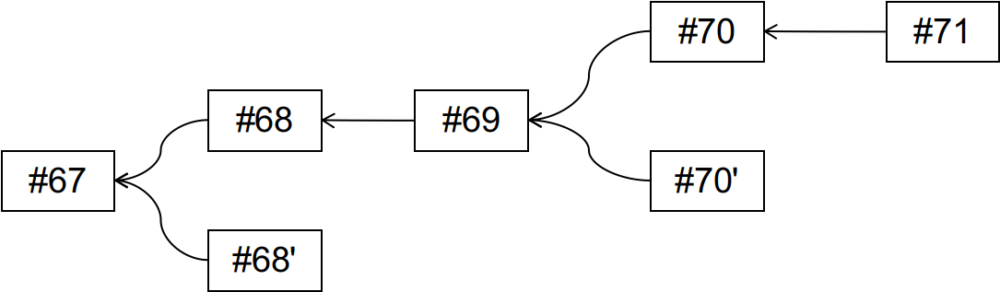
在实际的分布式系统中，由于网络延时、分区等因素，系统不是同步的系统。
在异步的网络系统，由FLP原理可知，各个节点不可能达成共识，因此对于分布式系统的分析，一般是基于部分同步假设的。
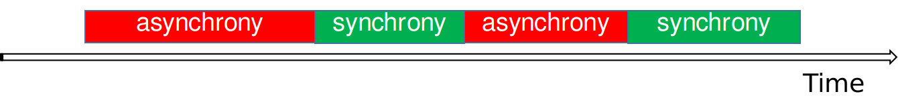
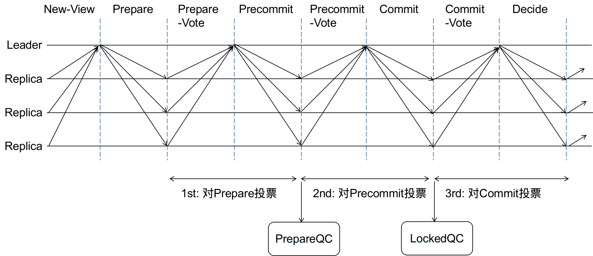
每个View开始时，新的Leader收集由(n−f)个副本节点发送的NEW-VIEW消息，每个NEW-VIEW消息中包含了发送节点上高度最高的prepareQC(如果没有则设为空)。
prepareQC可以看做是对于某个区块(n−f)个节点的投票集合，共识共识过程中第一轮投票达成的证据
Leader从收到的NewView消息中，选取高度最高的preparedQC作为highQC。因为highQC是viewNumber最大的，所以不会有比它更高的区块得到确认，该区块所在的分支是安全的。
下图是Leader节点本地的区块树， #71是Leader节点收到的highQC, 那么阴影所表示的分支就是一个安全分支，基于该分支创建新的区块不会产生冲突。
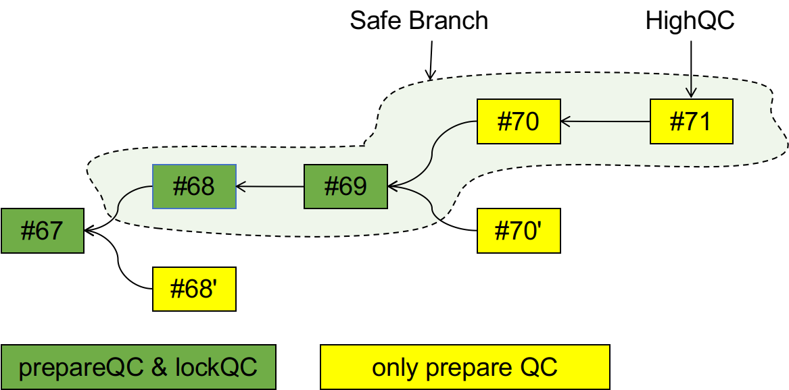
Leader节点会在highQC所在的安全分支来创建一个新的区块，并广播proposal，proposal中包含了新的区块和highQC，其中highQC作为proposal的安全性验证。
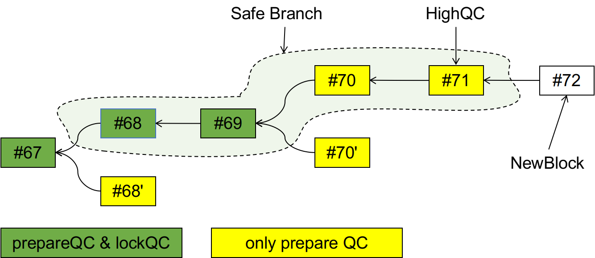
其他节点（replica）一旦收到当前View对应Leader的Proposal消息，Replica会根据会safeNode-predicate规则检查Proposal是否合法。如果Proposal合法，Replica会向Leader发送一个Prepare-vote（根据自己私钥份额对Proposal的签名）。
Replica对于Proposal的验证遵循如下的规则:
1). Proposal消息中的区块是从本机lockQC的区块扩展产生（即m.block是lockQC.block的子孙区块）
2). 为了保证liveness, 除了上一条之外，当Proposal.highQC高于本地lockQC中的view_number时也会接收该proposal。
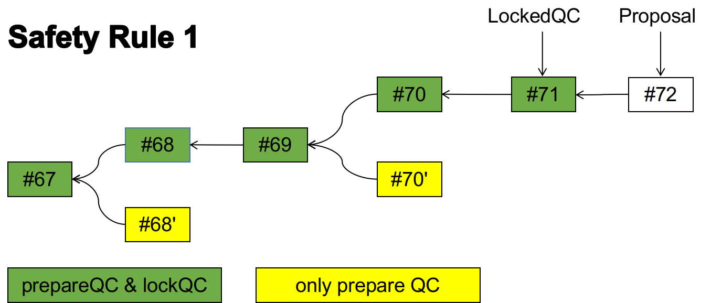
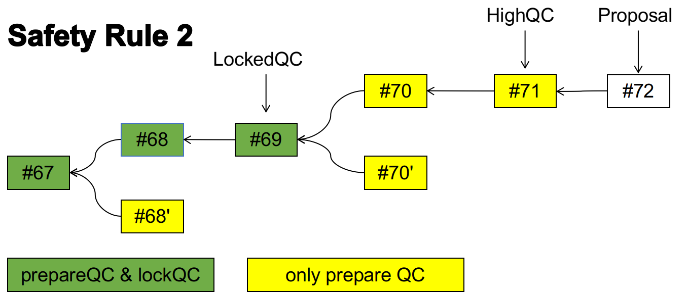
safety判断规则对比的是lockQC，而不是第一轮投票的结果，所以即使在上一轮针对A投了prepare票，假如A没有commit，那么下一轮依然可以对A’投票，所以说第一轮投票可以反悔。
Leader发出proposal消息以后，等待(n−f)个节点对于该proposal的签名，集齐签名后会将这些签名组合成一个新的签名，以生成prepare-QC保存在本地，然后将其放入PRECOMMIT消息中广播给Replica节点。
prepare-QC可以表明有(n−f)个节点对相应的proposal进行了签名确认。
digraph prepare {
rankdir=LR;
Leader -> Replica1 [label="PRECOMMIT"]
Leader -> Replica2
Leader -> Replica3
Leader -> Replica4
}
在PBFT、Tendermint中，签名（投票）消息是节点间相互广播，各个节点都要做投票收集工作，所以对于每轮投票，Replica都需要至少验证(n−f)个签名。
在HotStuff中引入了阈值签名方案，Replica利用各自的私钥份额签名，由Leader收集签名，Replica只需要将签名消息发送给Leader就可以。Leader将Replica的签名组装后，广播给Replica。这样HotStuff的一轮投票每个Replica只需要验证一次签名。
在HotStuff中，一轮投票的过程，是通过replica与Leader的交互完成
LibraBFT是基于hotStuff的共识协议，但是并没有采用hotStuff中的阈值签名方案
当Replica收到Precommit消息时，会对其签名，然后回复给leader。
commit阶段与precommit阶段类似，也是Leader先收集(n-f)个precommit-vote，然后将其组合为precommit-QC,并将其放在COMMIT消息中广播。
当Leader收到当前Proposal的（n-f）个precommit-vote时，会将这些投票组合成precommit-QC，然后将其放入COMMIT消息中广播。
当Replica收到COMMIT消息时，会对其签名commit-vote，然后回复给leader。更为重要的是，在此时，replica锁定在precommitQC上，将本地的lockQC更新成收到的precommitQC.
当Leader收到了（n-f）个commit-vote投票，将他们组合成commitQC，广播DECIDE消息。
Replica收到DECIDE消息中的commitQC后，认为当前proposal是一个确定的消息，然后执行已经确定的分支上的tx。Viewnumber加1，开始新的阶段。
证明思路： 反证法，假如在同一个view下，产生了相同类型的QC，而且最多存在f个作恶节点，那么就会有一个诚实节点双投了，这与前提假设矛盾。
证明（反证法）：
假设qc1.viewNumber==qc2.viewNumber
那么，在相同的view中，有2f+1个replica对qc1.block进行签名投票，同样有2f+1对qc2.block投票，这样的话，就存在一个正常节点在算法流程中投了针对某个消息投了两票，这与算法流程冲突。
证明思路： 反证法，假如正常节点commit了冲突的区块，我们追踪到最早出现的冲突区块的位置，则这个冲突的位置肯定与两条safety规则相矛盾。
证明：
1. 根据**Lemma1**， 在相同的view下，正常的replica不会对冲突的区块产生commitQC，所以不会commit冲突的区块。
2. 下面证明在不同的view下，正常的replica也不会对冲突的区块产生commit
证明（反证法）：
假设viewNumber在v1和v2时（v1 < v2），commit了冲突的区块，即存在commitQC_1 = {block1, v1}, commitQC_2={block2, v2}，且block1与block2冲突。为了简化证明，我们同时假设v1与v2之间不存在其他的commitQC了，即commitQC_2是commit_1之后的第一个commitQC.
在v1和v2之间,肯定存在一个最小的v_s(v1 < v_s <= v2)，使得v_s下存在有效的prepareQC_s{block_s, v_s},其中block_s与block1冲突.
当含有block_s的prepare被广播后，节点会对该消息做safety验证，由于block_s与block1冲突，所以显然，不符合safety规则1.
那么是否会符合规则2呢？
假如block_s.parent.viewNumber > block_1.viewNumber，那么显然block_s.parent与block_1冲突，所以block_s.parent是更早的与block1冲突的，这与v_s最小矛盾。
有2f+1个节点对于block_s的prepare消息投了票,那么这些节点在收到Prepare_s时,会进行safeNode验证,正常情况下,由于block_s与block1冲突,那么正常节点不会投出prepare_vote票,故而根本不会产生prepareQC_s, v_s根本不会存在. 这与上述假定冲突,因此在不同的view下,不可能对相同的block产生commit.
在basic hotStuff中，三阶段投票每一阶段无非都是发出消息然后收集投票，那么可以使用如下的方式简化协议。
在Prepare阶段的投票由当前view对应的leader1收集，集齐后生成prepareQC。然后将prepareQC发送到下一个view的leader2那里，leader2基于prepareQC开始新的prepare阶段，这是leader2的prepare阶段，同时也是leader1的precommit阶段。以此类推，leader2产生新的prepareQC,然后发送给下一个view的leader3，leader3开始自己的prepare阶段，同时也是leader1的commit阶段、leader2的precommit阶段。
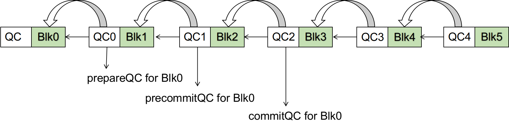
协议简化为如下过程：
正常情况下，每个View中都有一个区块产生并集齐签名，但是情况不会总是这么完美，有时不会有新的区块产生。为了保持区块高度与viewNumber的一致，hotStuff中引入了Dummy block的概念。假如在一个View中，不能达成共识，那么就在为该View添加一个Dummy block。
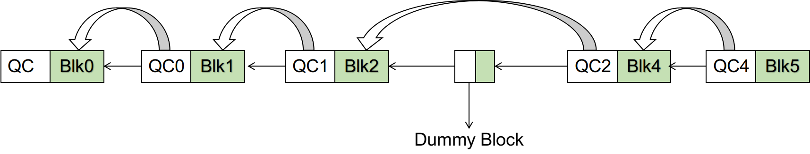
一个区块中的QC是对其直接父区块的确认，那么我们称之为1-chain。同理，一个区块b后面没有Dummy block的情况下，连续产生了k个区块，则称这段区块链分支是对区块b的k-chain。
如果b’对b形成了1-chain，那么b’相当于b的prepare阶段达成（第一轮投票成功），节点会将本地的prepareQC更新。
每当一个新的区块形成，节点都会检查是否会形成1-chain，2-chian，3-chain.
把hotstuff抽象成一个事件驱动的协议，可以将liveness相关的功能抽离出来，成为单独的pacemaker模块。safety与liveness在实现上解耦，safety是协议的核心保证安全性，liveness由pacemaker保证。
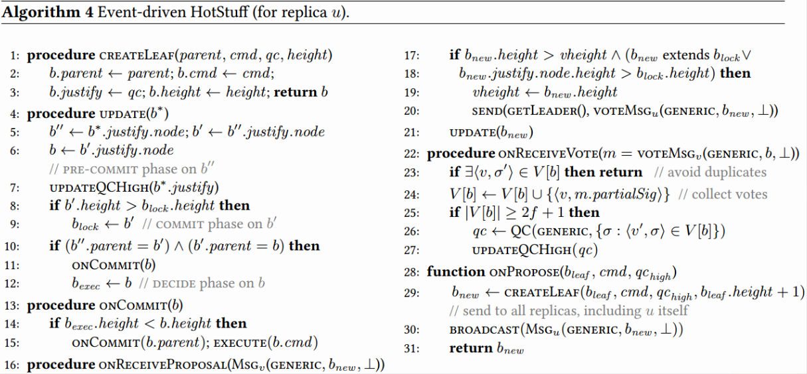
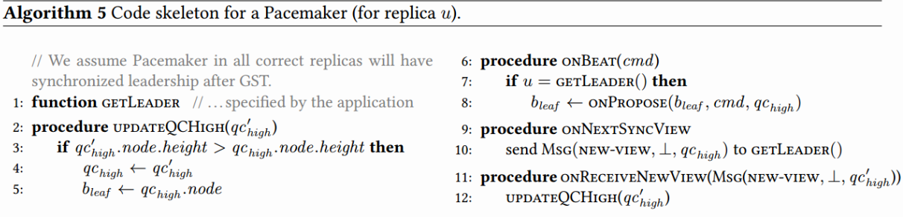
BFT类共识算法研究对比： PBFT - Tendermint - hosStuff - Casper - GRANDPA
表面上看，第三轮投票是为了在确认大多数节点(2f+1)达成前两轮投票后，再发出NewView消息。这是为了通过用一轮投票来保证大多数节点都可以进入下一个高度，通过一轮投票让各个节点保持视图对齐。
反过来看，假如去掉第三轮投票，达成第二轮投票后就发出NewView消息，会出现各个节点步调不一致，如果新的Leader自身运行的慢一点，第二轮投票还没有达成，那么收到NewView时，校验时会通不过。（但是通过几轮超时切换，共识流程依然会正常进行）
我认为，假如没有第三阶段，不会影响节点的liveness和safety特性。
在PBFT中的view change也是通过一轮投票实现的，与hotstuff中一样，只是pbft中只有在leader不能工作时候才会启动view change，在hotstuff中每个区块都会切换leader。加入pbft也是每次都切换Leader，那么pbft算上view change的话，也是三阶段投票。
在tendermint中，视图切换没有通过投票来完成，而是通过固定的时间间隔来实现的，即使集齐了两轮投票也需要等待本轮view的时间耗尽才会进入下一个view，通过时间的等待，确保节点的视图对齐。tendermint这样的优点是少了一轮投票，但是牺牲了responsiveness。responsiveness指的是一个区块被leader发出后，到达成共识的时间间隔只与实际的网络延时有关。而Tendermint中，即使网络状态完好，依然需要等待6秒左右的时间才能达成共识。hotstuff使用一轮投票，保持了responsive特性。